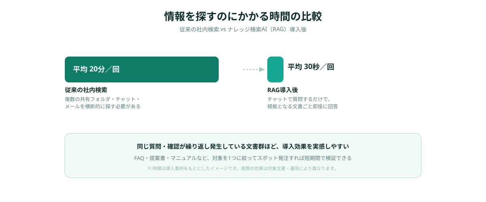
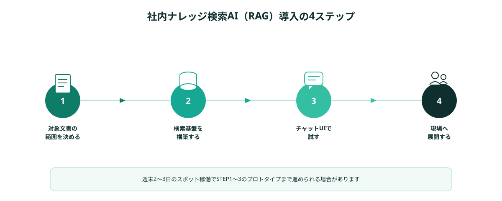

「あの資料、どこに置いたか分からない」「同じ質問を毎回先輩社員に聞いている」——社内に情報は十分あるはずなのに、必要なときに見つからない。多くの企業がこの非効率を抱えながら、対策を後回しにしています。
この状況を変える技術として注目されているのが、社内文書をAIに読み込ませて自然な質問に答えてもらう「ナレッジ検索AI（RAG）」です。仕組みとしては新しいものではありませんが、「大規模なシステム導入が必要」というイメージから、検討段階で止まっている企業も少なくありません。
この記事では、社内のナレッジ検索AIがなぜ後回しにされやすいのか、その仕組みの基本、そしてスポット発注で低コスト・短期間に導入する具体的な手順を解説します。
「あの資料、どこにあったか分からない」が放置される理由
社内の情報検索における非効率は、多くの企業で課題として認識されています。仕様書・議事録・マニュアル・過去の提案書などが、共有フォルダ、チャット、メール、クラウドストレージに分散して保存されており、欲しい情報がどこにあるのか探すだけで時間がかかってしまうケースは珍しくありません。
それでも対策が進まない理由は大きく3つあります。まず、「検索システムの導入」という発想が、大規模なシステム刷新と結びついてしまうことです。情報の分散という小さな課題に対して、全社的なナレッジマネジメントシステムの導入が提案され、予算も期間も合わずに頓挫してしまいます。
次に、「どこまでAIに読み込ませていいのか」という情報管理への不安です。社外のクラウドAIに機密情報を読み込ませることに抵抗があり、検討自体が止まってしまう企業も多くあります。
そして、実装できる人材が社内にいないという問題です。RAGという仕組み自体は技術的に確立されていますが、自社の文書形式や運用に合わせて構築できるエンジニアが身近にいなければ、構想のまま終わってしまいます。
- 「検索の仕組み化」が大規模なシステム刷新と結びつき、予算が合わなくなる
- 機密情報をAIに読み込ませることへの情報管理上の不安がある
- 自社の文書形式・運用に合わせて構築できる人材が社内にいない
これらの壁を越える現実的な方法が、「対象文書を絞って小さく作る」アプローチをスポット発注で進めることです。全社のナレッジを一度に整備するのではなく、まずは1つの部署・1種類の文書群から検索の仕組みを作ることで、低コストかつ短期間で効果を確認できます。
社内ナレッジ検索AI（RAG）とは何か
RAG（Retrieval-Augmented Generation）とは、社内の文書を検索可能な形に変換しておき、ユーザーの質問に対して関連する文書を探し出した上で、AIがその内容をもとに回答を生成する仕組みです。一般的なAIチャットと違い、社内文書という根拠に基づいて答えるため、的外れな回答が出にくいという特徴があります。
イメージとしては、「優秀な新人に社内文書をすべて読ませた上で、質問に答えてもらう」状態に近いものです。「先月の見積もりフォーマットはどれ？」「この取引先との過去のやり取りはある？」といった質問に対して、該当する文書の場所や内容を踏まえて回答してくれます。
技術的な仕組みを完全に理解する必要はありません。発注者側に求められるのは、「どの文書を対象にするか」「誰がどんな質問をしたいか」を明確にすることであり、検索基盤の構築自体はエンジニアに任せることができます。
大規模導入とスポット発注、コスト構造の違い
社内ナレッジ検索AIの導入をシステム会社にフルセットで依頼する場合、要件定義・文書整備・基盤構築・運用設計までを一括で提案されることが多く、対象文書の種類が多いほど期間・費用ともに膨らみやすくなります。一方、対象文書を「まずはこの1種類だけ」と絞り込んでスポット発注すれば、検索基盤の構築自体に集中できるため、規模を大幅に圧縮できます。

もちろん、スポット発注は「全社の文書を横断的に統合する」ような大規模案件には向きません。しかし、「営業部の提案書だけ」「カスタマーサポートのFAQだけ」といった範囲が決まったナレッジ検索であれば、スポット発注の方が着手から効果確認までのスピードは速くなりやすいというのが実態です。
スポット発注でRAGを導入する4ステップ
実際に社内ナレッジ検索AIをスポット発注で進める場合、次の4ステップで検討すると進めやすくなります。
STEP1｜対象とする文書の範囲を決める
最初に行うべきは、「社内のすべての情報を検索可能にしたい」という大きな目標を、具体的な1つの文書群まで絞り込むことです。「営業の過去の提案書」「カスタマーサポートのFAQと対応履歴」「製品マニュアル一式」など、1つの部署や1つの目的に閉じた文書群がスポット発注に向いています。
対象を絞り込む際は、「問い合わせや確認の頻度が高い」「特定の社員に質問が集中している」という条件に当てはまる文書群を優先すると、導入後の効果を実感しやすくなります。
STEP2｜検索基盤（ベクトル化）を構築する
対象文書が決まったら、エンジニアが文書を検索可能な形（ベクトルデータ）に変換し、質問に対して関連箇所を探し出せる検索基盤を構築します。PDF・Word・スプレッドシートなど、文書の形式に応じて読み取り方法を調整する作業もこの段階に含まれます。
情報管理に不安がある場合は、「社外のクラウドAIには読み込ませたくない文書」をあらかじめ伝えておくことで、扱う範囲やAIサービスの選定にその条件を反映してもらえます。
STEP3｜チャット形式の検索UIで試す
検索基盤ができたら、チャット形式で質問できる簡易的な画面を用意し、実際の業務担当者に使ってもらいます。「思っていた回答と違う」「この文書も対象に含めたい」といったフィードバックをもとに、対象文書や回答の精度を調整していきます。
このプロトタイプ作成は、既存のAI APIや検索ライブラリを組み合わせる実装が中心になることが多く、ゼロからの大規模開発に比べて短期間で形にしやすいのが特徴です。週末2〜3日のスポット稼働で、実際の文書を使った動作確認まで進められる場合があります。
STEP4｜現場にスモールスタートで展開する
プロトタイプで一定の精度が確認できたら、まずは1つの部署・1つのチームに展開します。全社展開を急がず、利用者の反応を見ながら対象文書を広げていくことで、運用に合った形に自然と仕上がっていきます。
実際にスポット発注で実現したナレッジ検索AIの事例

ANKENを通じたスポット発注の事例から、実際にどのようなナレッジ検索AIが実現しているかを紹介します。
まず多いのは、カスタマーサポートのFAQ・過去の対応履歴を対象にした検索AIです。問い合わせ対応の担当者が、過去の類似ケースをチャットで質問するだけで参照できるようになり、新人担当者の立ち上がりが早くなったという事例があります。週末2日のスポット稼働でプロトタイプまで仕上げています。
次に、営業部門の過去の提案書・見積書を対象にした検索AIです。「過去に似た業界の提案をしたことがあるか」「このサービスの料金感はどれくらいか」といった質問に、過去の提案書を踏まえて回答できる仕組みを、週末1回のスポット稼働で構築した例があります。
また、製品マニュアル・社内規定を対象にした検索AIも需要が増えています。紙やPDFで分散していたマニュアルを読み込ませ、現場のスタッフが「この操作のやり方は？」とチャットで聞ける状態まで、週末2〜3日のスポット作業で仕上げた事例があります。
- 対象文書が1つの部署・1つの目的に閉じており、範囲が明確である
- 同じ質問・確認が繰り返し発生しており、効果を実感しやすい
- 既存のAI APIや検索ライブラリを組み合わせて実装できる
- 現場の担当者からすぐにフィードバックを得られる体制がある
共通しているのは、「まず1つの文書群だけを検索できるようにする」というスモールスタートの姿勢です。全社のナレッジを一気に整備しようとせず、効果がわかりやすい範囲から着手することで、スポット発注でも確実に成果を出しやすくなります。
まとめ・ANKENへのご相談
社内ナレッジ検索AI（RAG）の導入は、「全社の情報を一度に整備する」ことを前提にすると予算も期間も大きくなりがちですが、FAQ・提案書・マニュアルといった文書群単位で切り出して依頼することで、低コスト・短期間での実現が可能になります。
重要なのは「対象文書の範囲を1つに絞ること」と「情報管理上の条件を最初に伝えること」です。この2点を押さえたうえでANKENに相談いただければ、文書の種類や運用に合ったAIエンジニアを提案します。対象にしたい文書のサンプルだけでも構いません。固定費ゼロ・週末スポットから、社内のナレッジ検索AI導入を進められます。
FAQ・提案書・マニュアルなど、1つの文書群からの相談を歓迎します。固定費ゼロ・週末スポットから依頼可能です。
👉 無料でスポット依頼を相談する初回相談は無料です。要件が固まっていなくてもOKです。